Amazon Web Service studies
Created in 2002, and launched as AWS in 2004 with SQS as first service offering.
Use cases
- Enable to build scalable apps, adaptable to business demand
- Extend Enterprise IT
- Support flexible big data analytics
Organization
AWS is a global infrastructure with 24 regions and 2 to 6 availability zones per region. Ex: us-west-1-2a.
AZ is one or more DC with redundant power, networking and connectivity. Isolated from disasters. Interconnected with low latency network. Some services are local or global:
- EC2 is a regional service.
- IAM is a global service.
AWS Local Zone location is an extension of an AWS Region where you can run your latency sensitive application in geography close to end-users.
AWS Wavelength enables developers to build applications that deliver single-digit millisecond latencies to mobile devices and end-users. AWS infrastructure deployments that embed AWS compute and storage services within the telecommunications providers’ datacenters at the edge of the 5G networks, and seamlessly access the breadth of AWS services in the region.
Choose an AWS region, depending of your requirements like:
- compliance with data govenance and legal requirements
- close to users to reduce latency
- availability of service within a region
- pricing
IAM Identity and Access Management
- Define user (physical person), group and roles, and permissions
- One role per application
- Users are defined as global service encompasses all regions
- Policies are written in JSON, to define permissions for users to access AWS services, groups and roles
- Least privilege permission: Give users the minimal amount of permissions they need to do their job
- Assign users to groups and assign policies to groups and not to individual user.
- Groups can only contain users, not other groups
- Users can belong to multiple groups
- For identity federation, SAML standard is used
Policy is a json doc which consists of a effect, a principals (to apply the policy to), an action (what is allowed or denied) and resources sections.
EC2 components
- EC2 is a renting machine
- Storing data on virtual drives: EBS
- Distribute load across machines: ELB
- Auto scale the service ASG
Amazon Machine Image: AMI, image for OS and preinstalled softwares. Amazon Linux 2 for linux base image.
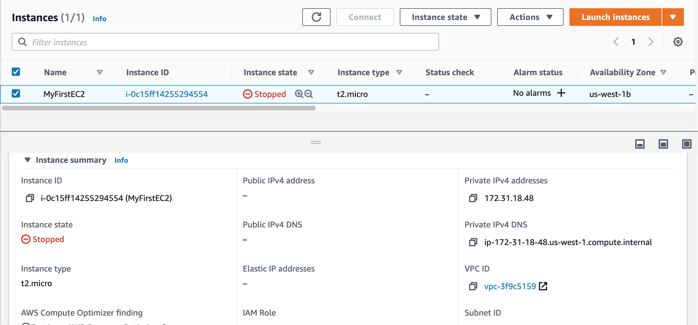
When creating an instance, we can select the VPC, the AZ subnet, and the storage (EBS) for root folder to get the OS. The security group helps to isolate
the instance, for example, authorizing ssh on port 22 or HTTP port 80.
Get the public ssh key, and when the instance is started, use: ssh -i EC2key.pem ec2-user@ec2-52-8-75-8.us-west-1.compute.amazonaws.com to connect to the EC2
Can also use EC2 Instance Connect to open a terminal in the web browser. Need to get SSH port open.
EC2 has a section to add User data, which could be used to define a bash script to install dependent software and start some services.
EC2 instance types: (see ec2instances.info)
- R: applications that needs a lot of RAM – in-memory caches
- C: applications that needs good CPU – compute / databases
- M: applications that are balanced (think “medium”) – general / web app
- I: applications that need good local I/O (instance storage) – databases
- G: applications that need a GPU
- T2/T3 for burstable instance: When the machine needs to process something unexpected (a spike in load for example), it can burst. Use burst credits to control CPU usage.
Launch types
- On demand: short workload, predictable pricing, pay per second after first minute.
- Reserved for at least for one year, used for long workloads like database. Get discounted rate from on-demand.
- Convertible reserved instance for changing resource capacity over time.
- Scheduled reserved instance for job based workload.
-
Spot instance for very short - 90% discount on on-demand - used for work resilient to failure like batch job, data analysis, image processing,...
- Define a max spot price and get the instance while the current spot price < max. The hourly spot price varies based on offer and capacity.
- if the current spot price > max, then instance will be stopped
- with spot block we can a time frame without interruptions.
- The expected state is defined in a 'spot request' which can be cancelled. One time or persistent request types are supported. Cancel a spot request does not terminate instances, but need to be the first thing to do and then terminate the instances.
- Spot fleets allow to automatically request spot instance with the lowest price.
-
Dedicated hosts to book entire physical server and control instance placement. # years. BYOL.
Use EC2 launch templates to automate instance launches, simplify permission policies, and enforce best practices across the organization. (Look very similar as docker image)
AMI
Bring our own image. Shareable on amazon marketplace. Can be saved on S3 storage. By default, our AMIs are private, and locked for our account / region.
AMI are built for a specific AWS region. But they can be copied and shared See AWS doc - copying an AMI.
EC2 Hibernate
The in memory state is preserved, persisted to a file in the root EBS volume. It helps to make the instance startup time quicker. The root EBS volume is encrypted. Constrained by 150GB RAM. No more than 60 days.
VPC
A virtual private cloud (VPC) is a virtual network dedicated to your AWS account. It is logically isolated from other virtual networks in the AWS Cloud. You can launch your AWS resources, such as Amazon EC2 instances, into your VPC. You can specify an IP address range for the VPC, add subnets, associate security groups, and configure route tables.
VPC HelpS to:
- assign static IP addresses, potentially multiple addresses for the same instance
- Change security group membership for your instances while they're running
- Control the outbound traffic from your instances (egress filtering) in addition to controlling the inbound traffic to them (ingress filtering)
- Default VPC includes an internet gateway

- non-default subnet has a private IPv4 address, but no public IPv4
You can enable internet access for an instance launched into a non-default subnet by attaching an internet gateway to its VPC. Alternatively, to allow an instance in your VPC to initiate outbound connections to the internet but prevent unsolicited inbound connections from the internet, you can use a network address translation (NAT) device for IPv4 traffic. NAT maps multiple private IPv4 addresses to a single public IPv4 address. A NAT device has an Elastic IP address and is connected to the internet through an internet gateway. You can optionally connect your VPC to your own corporate data center using an IPsec AWS managed VPN connection, making the AWS Cloud an extension of your data center. A VPN connection consists of a virtual private gateway attached to your VPC and a customer gateway located in your data center. A virtual private gateway is the VPN concentrator on the Amazon side of the VPN connection. A customer gateway is a physical device or software appliance on your side of the VPN connection.
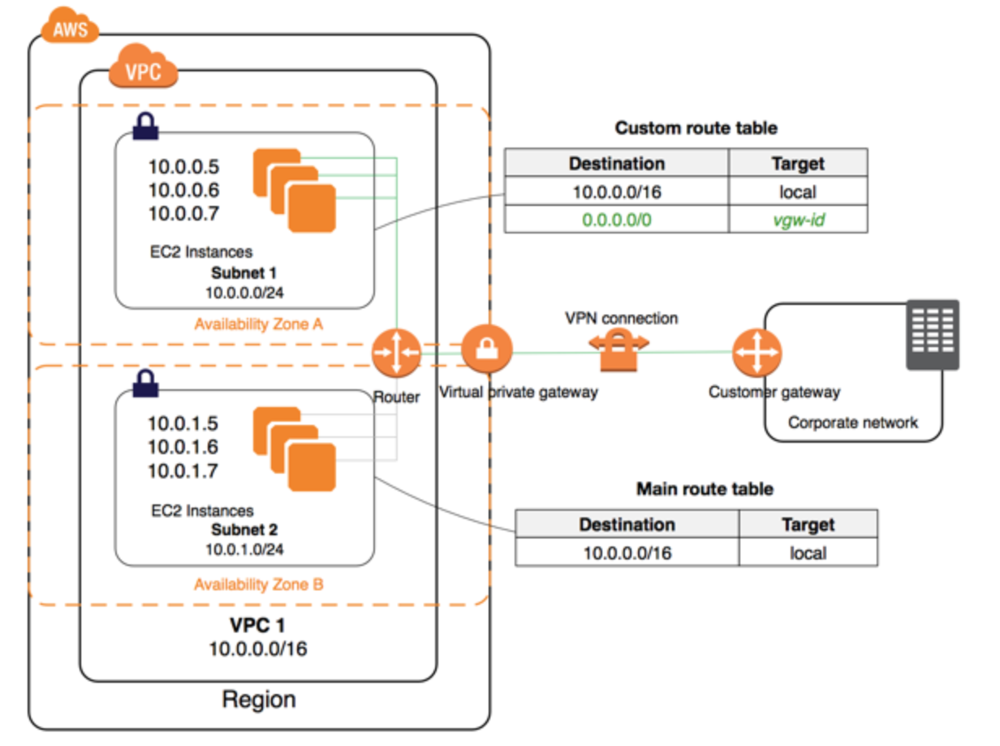
Security group
Define inbound and outbound security rules. They regulate access to ports, authorized IP ranges, control inbound and outbound network. By default all inbound traffic is denied and outbound authorized.
- Can be attached to multiple EC2 instances and to load balancers
- Locked down to a region / VPC combination
- Live outside of the EC2
- Define one security group for SSH access
- Application not accessible is a security group
- Connect refused in an application error or is not launched
- Instances with the same security group can access each other
- Security group can reference other security groups, IP address, CIDR but no DNS server
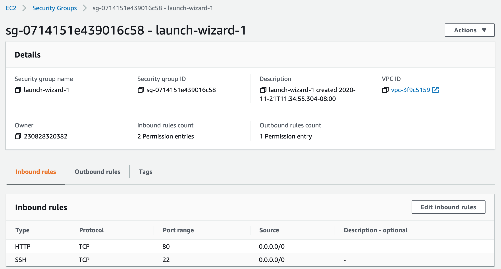
Networking
IPv4 allows 3.7 billions of different addresses. Private IP @ is for private network connections. Internet gateway has public and private connections. Public IP can be geo-located. When connected to an EC2 the prompt lists the private IP (ec2-user@ip-172-31-18-48). Private IP stays stable on instance restart, while public may change.
With Elastic IP address we can mask an EC2 instance failure by rapidly remapping the address to another instance. But better to use DNS.
Playing with Apache HTTP
# Swap to roo
sudo su
# update OS
yum update -y
# Get Apache HTTPd
yum install -y httpd.x86_64
# Start the service
systemctl start httpd.service
# Enable it cross restart
systemctl enable httpd.service
> Created symlink from /etc/systemd/system/multi-user.target.wants/httpd.service to /usr/lib/systemd/system/httpd.service
# Get the availability zone
EC2-AZ=$(curl -s http://169.254.169.254/latest/meta-data/placement/availability-zone)
# Change the home page by changing /var/www/html/index.html
echo "<h3>Hello World from $(hostname -f) in AZ= $EC2_AZ </h3>" > /var/www/html/index.html
This script can be added as User Data (Under Advanced Details while configuring new instance) so when the instance starts it executes this code.
Elastic Network Instances
ENI is a logical component in a VPC that represents a virtual network card. It has the following attributes:
- Primary private IPv4, one or more secondary IPv4
- One Elastic IP (IPv4) per private IPv4
- One Public IPv4
- One or more security groups
- A MAC address
- We can create ENI independently and attach them on the fly (move them) on EC2 instances for failover
- Bound to a specific availability zone (AZ)
Placement groups
Define strategy to place EC2 instances:
- Cluster: groups instances into a low-latency group in a single Availability Zone
- highest performance while talking to each other as We're performing big data analysis
- Spread: groups across underlying hardware (max 7 instances per group per AZ)
- Reduced risk is simultaneous failure
- EC2 Instances are on different physical hardware
- Application that needs to maximize high availability
- Critical Applications where each instance must be isolated from failure from each other
- Partition: spreads instances across many different partitions (which rely on different sets of racks) within an AZ.
- Partition is a set of racks
- Up to 100s of EC2 instances
- The instances in a partition do not share racks with the instances in the other partitions
- A partition failure can affect many EC2 but won’t affect other partitions
- EC2 instances get access to the partition information as metadata
- HDFS, HBase, Cassandra, Kafka
Access from network and policies menu, define the group with expected strategy, and then it is used when creating the EC2 instance by adding the instance to a placement group.
Load balancer
Route traffic into the different EC2 instances. It also exposes a single point of access (DNS) to the deployed application. In case of failure, it can route to a new instance, transparently and cross multiple AZ. It uses health check (/health on the app called the ping path) to asses instance availability. It provides SSL termination. It supports to separate private (internal) to public (external) traffic.
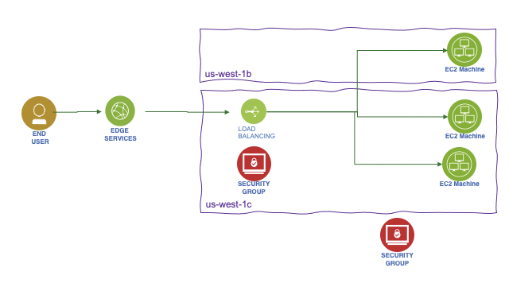
ELB: EC2 load balancer is the managed service by Amazon. Three types supported:
- Classic load balancer: older generation. For each instance created, update the load balancer configuration so it can route the traffic.
- Application load balancer: HTTP, HTTPS (layer 7), Web Socket.
- It specifies availability zones: it routes traffic to the targets in these Availability Zones. Each AZ has one subnet. To increase availability, we need at least two AZs.
- It uses target groups, to group applications
- route on URL, hostname and query string
- Get a fixed hostname
- the application do not see the IP address of the client directly (ELB does a connection termination), but ELB put it in the header
X-Forwarded-For,X-Forwarded-PortandX-Forwarded-Proto.
- Network load balancer: TCP, UDP (layer 4), TLS
- handle millions request/s
- use to get a public static IP address
To control that only the load balancer is sending traffic to the application, we need to set up an application security group on HTTP, and HTTPS with the source behind the security group id of the ELB. LBs can scale but need to engage AWS operational team.
HTTP 503 means LB is at capacity or not register target. Verify security group in case of no communication between LB and app.
Target group defines protocol to use, health check checking and what applications to reach (instance, IP or lambda).
Example of listener rule for an ALB:
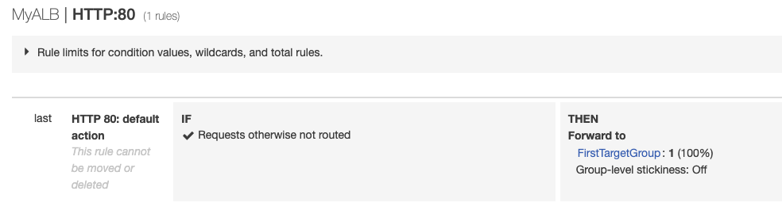
Load balancer stickiness
Used when the same client needs to interact with the same backend instance. A cookie, with expiration date, is used to identify the client. The classical or ALB manage the routing. This could lead to inbalance traffic so overloading one instance. With ALB it is configured in the target group properties.
Cross Zone Load Balancing
Each load balancer instance distributes traffic evenly across all registered instances in all availability zones. This is the default setting for ALB and free of charge. It is disabled by default for NLB.
TLS - Transport Layer Security,
An SSL/TLS Certificate allows traffic between our clients and our load balancer to be encrypted in transit (in-flight encryption).
- Load balancer uses an X.509 certificate (SSL/TLS server certificate).
- Manage certificates using ACM (AWS Certificate Manager)
- When defining a HTTPS listener in a LB, we must specify a default certificate for the HTTPS protocol, while defining the routing rule to a given target group. Need multiple certs to support multiple domains.
- Clients can use SNI (Server Name Indication) to specify the hostname they reach. The ALB or NLB will get the certificate for this host to support the TLS handshake.
Connection draining
This is a setting to control connection timeout and reconnect when an instance is not responding. It is to set up the time to complete “in-flight requests”. When an instance is "draining", ELB stops sending new requests to the instance. THe time out can be adjusted, depending of the application, from 1 to 3600 seconds, default is 300 seconds, or disabled (set value to 0).
Auto Scaling Group (ASG)
The goal of an ASG is to scale out (add EC2 instances) to match an increased load, or scale in (remove EC2 instances) to match a decreased load. It helps to provision and balance capacity across Availability Zones to optimize availability. It can also ensure we have a minimum and a maximum number of machines running. It detects when an instance is unhealthy.
Automatically Register new instances to a load balancer.
ASG has the following attributes:
- AMI + Instance Type with EC2 User Data (Can use template to define instances)
- EBS Volumes
- Security Groups
- SSH Key Pair
- Min Size / Max Size / Initial Capacity to control number of instances
- Network + Subnets Information to specify where to run the EC2 instances.
- Load Balancer Information, with target groups to be used as a grouping of the newly created instances
- Scaling Policies help to define rules to manage instance life cycle, based for example on CPU usage or network bandwidth used.
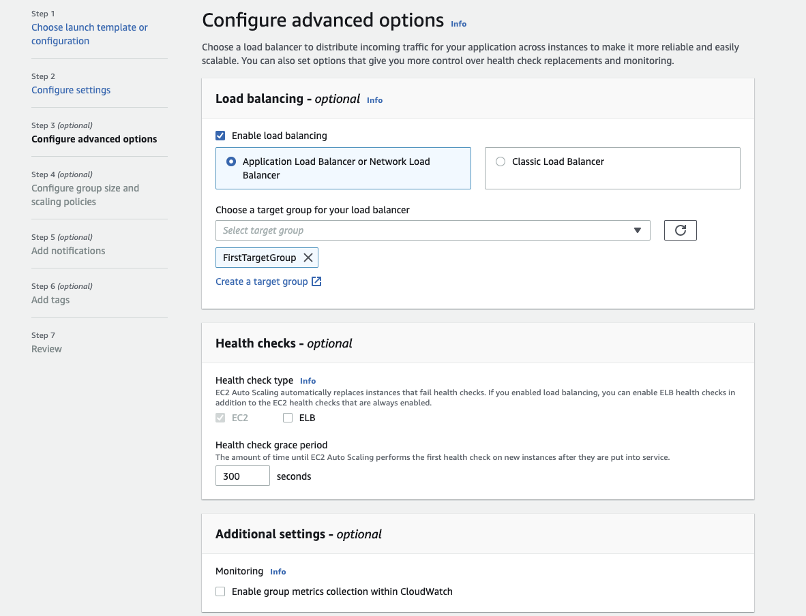
- when creating scaling policies, CloudWatch alarms are created. Ex: "Create an alarm if: CPUUtilization < 36 for 15 data points within 15 minutes".
- ASG tries the balance the number of instances across AZ by default, and then delete based on the age of the launch configuration
- The capacity of our ASG cannot go over the maximum capacity ee have allocated during scale out events
- when an ALB validate an health check issue it terminate the EC2 instance.
EBS Volume
Elastic Block Store Volume is a network drive attached to the instance. It is locked to an AZ, and uses provisioned capacity in GBs and IOPS.
- Create a EBS while creating the EC2 instance and keep it not deleted on shutdown
- Once logged, add a filesystem, mount to a folder and modify boot so the volume is mounted at start time. Which looks like:
# List existing block storage, verify our created storage is present
lsblk
# Verify file system type
sudo file -s /dev/xdvf
# Create a ext4 file system on the device
sudo mkfs -t ext4 /dev/xvdb
# make a mount point
sudo mkdir /data
sudo mount /dev/xvdb /data
# Add entry in /etc/fstab with line like:
/dev/xvdb /data ext4 default,nofail 0 2
- EBS is already a redundant storage, replicated within an AZ.
- EC2 instance has a logical volume that can be attached to two or more EBS RAID 0 volumes, where write operations are distributed among them. It is used to increate IOPS without any fault tolerance. If one fails, we lost data. It could be used for database with built-in replication or Kafka.
- RAID 1 is for better fault tolerance: a write operation is going to all attached volumes.
Volume types
- GP2: used for most workload up to 16 TB at 16000 IOPS max (3 IOPS per GB brustable to 3000)
- io 1: critical app with large database workloads. max ratio 50:1 IOPS/GB. Min 100 iops and 4G to 16T
- st 1: Streaming workloads requiring consistent, fast throughput at a low price. For Big data, Data warehouses, Log processing, Apache Kafka
- sc 1: throughput oriented storage. 500G- 16T, 500MiB/s. Max IOPs at 250. Used for cold HDD, and infrequently accessed data.
Encryption has a minimum impact on latency. It encrypts data at rest and during snapshots.
Instance store is a volume attached to the instance, used for root folder. It is a ephemeral storage but has millions read per s and 700k write IOPS. It provides the best disk performance and can be used to have high performance cache for our application.
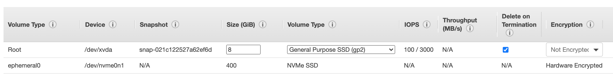
If we need to run a high-performance database that requires an IOPS of 210,000 for its underlying filesystem, we need instance store and DB replication in place.
Snapshots
Used to backup disk and stored on S3. Snapshot Lifecycle policies helps to create snapshot with scheduling it by defining policies. To move a volume to another AZ or data center we can create a volume from a snapshot.
Elastic File System
Managed Network FS for multi AZs. (3x gp2 cost), controlled by using security group. This security group needs to add in bound rule of type NFS connected / linked to the SG of the EC2. Only Linux based AMI. Encryption is supported using KMS. 1000 concurrent clients 10GB+/s throughput, bursting or provisioned. Support different performance mode, like max I/O or general purpose Support storage tiers to move files after n days, infrequent EFS-IA for files rarely accessed. Use amazon EFS util tool in each EC2 instance to mount the EFS to a target mount point.
Relational Database Service - RDS
Managed service for SQL based database (mySQL, Postgresql, SQL server, Oracle). Must provision EC2 instance and EBS volume. Support multi AZs for DR with automatic failover to standby, app uses one unique DNS name. Continuous backup and restore to specific point of time restore. It uses gp2 or io1 EBS. Transaction logs are backed-up every 5 minutes. Support user triggered snapshot.
- Read replicas: helps to scale the read operations. Can create up to 5 replicas within AZ, cross AZ and cross region. Replication is asynch. Use cases include, reporting, analytics, ML model
- AWS charge for network when for example data goes from one AZ to another.
- Support at rest Encryption. Master needs to be encrypted to get encrypted replicas.
- We can create a snapshot from unencrypted DB and then copy it by enabling the encryption for this snapshot. From there we can create an Encrypted DB
Our responsibility:
- Check the ports / IP / security group inbound rules in DB’s SG
- In-database user creation and permissions or manage through IAM
- Creating a database with or without public access
- Ensure parameter groups or DB is configured to only allow SSL connections
From a solution architecture point of view:
- Operations: small downtime when failover happens. For maintenance, scaling in read replicas, updating underlying ec2 instance, or restore EBS, there will be manual intervention.
- Security: AWS responsible for OS security, we are responsible for setting up KMS, security groups, IAM policies, authorizing users in DB, enforcing SSL.
- Reliability: Multi AZ feature helps to address it, with failover mechanism in case of failures
- Performance: depends on EC2 instance type, EBS volume type, ability to add Read Replicas. Doesn’t auto-scale, adapt to workload manually.
Aurora
Proprietary SQL database, work using postgresql and mysql driver. It is cloud optimized and claims 5x performance improvement over mySQL on RDS, and 3x for postgresql.
Can grow up to 64 TB. Sub 10ms replica lag, up to 15 replicas.
Failover in Aurora is instantaneous. It’s HA (High Availability) native. Use 1 master - 5 readers to create 6 copies over 3 AZs. 3 copies of 6 need for reads. Peer to peer replication. Use 100s volumes. Autoscaling on the read operation.
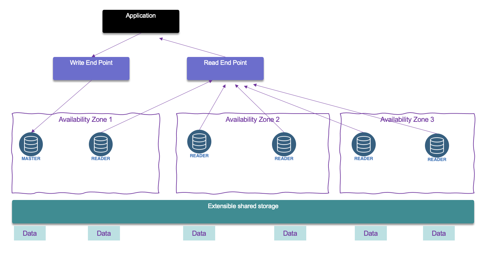
It is CQRS at DB level, and read can be global. Use writer end point and reader endpoint.
It also supports one write with multiple reader and parallel query, multiple writes and serverless to automate scaling down to zero (No capacity planning needed and pay per second).
With Aurora global database one primary region is used for write and then up to 5 read only regions with replica lag up to 1 s. Promoting another region (for disaster recovery) has an RTO of < 1 minute
- Operations: less operation, auto scaling storage.
- Security: AWS responsible for OS security, we are responsible for setting up KMS, security groups, IAM policies, authorizing users in DB, enforcing SSL.
- Reliability: Multi AZ, HA
- Performance: 5x performance, up to 15 read replicas.
ElastiCache
Get a managed Redis or Memcached cluster. Applications queries ElastiCache, if not available, get from RDS and store in ElastiCache. Key-Value store. It can be used for user session store so user interaction can got to different application instances.
Redis is a multi AZ with Auto-Failover, supports read replicas to scale and for high availability. It can persist data using AOF persistence, and has backup and restore features.
Memcached is a multi-node for partitioning of data (sharding), and no persistence, no backup and restore. It is based on a multi-threaded architecture.
Some patterns for ElastiCache:
- Lazy Loading: all the read data is cached, data can become stale in cache
- Write Through: Adds or update data in the cache when written to a DB (no stale data)
- Session Store: store temporary session data in a cache (using TTL features)
Sub millisecond performance, in memory read replicas for sharding.
DynamoDB
AWS proprietary NoSQL database, Serverless, provisioned capacity, auto scaling, on demand capacity. Highly Available, Multi AZ by default, Read and Writes are decoupled, and DAX can be used for read cache.
The read operations can be eventually consistent or strongly consistent.
DynamoDB Streams to integrate with AWS Lambda.
Route 53
It is a managed Domain Name System. DNS is a collection of rules and records which helps clients understand how to reach a server through URLs. Here is a quick figure to summary the process
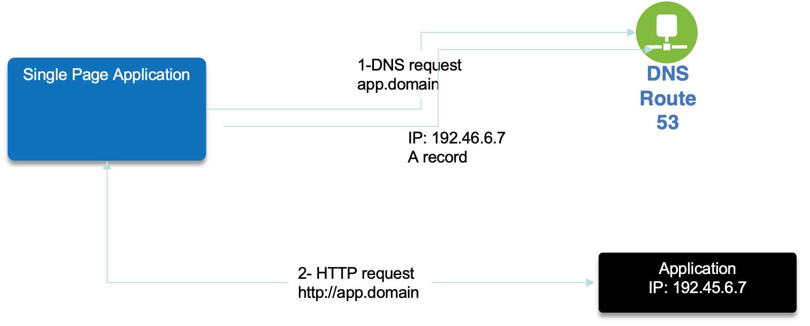
DNS records Time to Live (TTL), is set to get the web browser to keep the DNS resolution in cache. High TTL is around 24 hours, low TTL at 60s will make more DNS calls. TTL should be set to strike a balance between how long the value should be cached vs how much pressure should go on the DNS. Need to define the TTL for the app depending on the expected deployment model.
A hosted zone is a container that holds information about how we want to route traffic for a domain. Two types are supported: public or private within a VPC.
Route 53 is a registrar. We can buy domain name.
Use dig <hostname> to get the DNS resolution record.
CNAME vs Alias
CNAME is a DNS record to maps one domain name to another. CNAME should point to a ALB. Alias is used to point a hostname of an AWS resource and can work on root domain (domainname.com).
Routing
A simple routing policy to get an IP @ from a hostname could not have health check defined.
The weighted routing policy controls the % of the requests that go to specific endpoint. Can do blue-green traffic management. It can also help to split traffic between two regions. It can be associated with Health Checks
The latency routing Policy redirects to the server that has the least latency close to the client. Latency is evaluated in terms of user to designated AWS Region.
Health check monitors he health and performance of the app servers or endpoints and assess DNS failure. We can have HTTP, TCP or HTTPS health checks. We can define from which region to run the health check. They are charged per HC / month. It is recommended to have one HC per app deployment. It can also monitor latency,
The failover routing policy helps us to specify a record set to point to a primary and then a secondary instance for DR.
The Geo Location routing policy is based on user's location, and we may specify how the traffic from a given country should go to this specific IP. Need to define a “default” policy in case there’s no match on location.
The Multi Value routing policy is used to access multiple resources. The record set, associates a Route 53 health checks with records. The client on DNS request gets up to 8 healthy records returned for each Multi Value query. If one fails then the client can try one other IIP @ from the list.
Some application patterns
For solution architecture we need to assess cost, performance, reliability, security and operational excellence.
Stateless App
The step to grow a stateless app: add vertical scaling by changing the EC2 profile, but while changing user has out of service. Second step is to scale horizontal, each EC2 instance has static IP address and DNS is configured with 'A record' to get each EC2 end point. But is one instance is gone, the client App will see it down until TTL expires.
The reference architecture includes DNS record set with alias record (to point to ALB. Using alias as ALB address may change over time) with TTL of 1 hour. Use load balancers in 3 AZs (to survive disaster) to hide the horizontal scaling of EC2 instances (managed with auto scaling group) where the app runs. Health checks are added to keep system auto adaptable and hide system down, and restricted security group rules to control EC2 instance accesses. ALB and EC instances are in multi different AZs. The EC instances can be set up with reserved capacity to control cost.
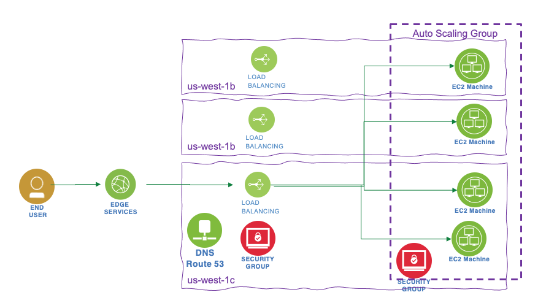
Stateful app
In this case we will add the pattern of shopping cart. If we apply the same architecture as before, at each interaction of the user, it is possible the traffic will be sent to another EC2 instance that started to process the shopping cart. Using ELB with stickiness will help to keep the traffic to the same EC2, but in case of EC2 failure we still loose the cart. An alternate is to use user cookies to keep the cart at each interaction. It is back to a stateless app as state is managed by client and cookie. For security reason the app needs to validate the cookie content. cookie as a limit of 4K data.
Another solution is to keep session data into an elastic cache, like Redis, and use the sessionId as key and persisted in a user cookie. So EC2 managing the interaction can get the cart data from the cache using the sessionID. It can be enhanced with a RDS to keep user data. Which can also support the CQRS pattern with read replicas. Cache can be update with data from RDS so if the user is requesting data in session, it hits the cache.
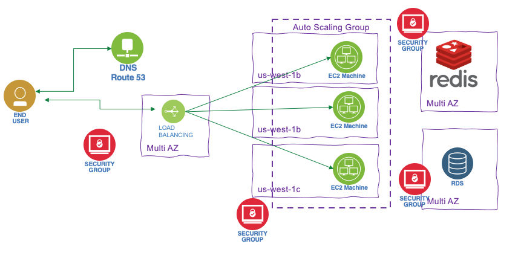
Cache and database are set on multi AZ, as well as EC2 instance and load balancer, all to support disaster. Security groups need to be defined to get all traffic to the ELB and limited traffic between ELB and EC2 and between EC2 and cache and EC2 and DB.
Another example of stateful app is the ones using image stored on disk. In this case EC2 EBS volume will work only for one app instance, but for multi app scaling out, we need to have a Elastic FS which can be Multi AZ too.
Deploying app
The easiest solution is to create AMI containing OS, dependencies and app binary. This is completed with User Data to get dynamic configuration. Database data can be restored from Snapshot, and the same for EFS data.
Elastic Beanstalk is a developer centric view of the app, hiding the complexity of the IaaS. From one git repository it can automatically handle the deployment details of capacity provisioning, load balancing, auto-scaling, and application health monitoring.
S3
Amazon S3 allows people to store objects (files) in buckets (directories), which must have a globally unique name (cross users!). They are defined at the region level. Object in a bucket, is referenced as a key which can be seen to a file path in a file system. The max size for an object is 5 TB but need to be uploaded in multi part using 5GB max size.
S3 supports versioning at the bucket level. So file can be restored from previous version, and even deleted file can be retrieved from a previous version.
Objects can also be encrypted, and different mechanisms are available:
- SSE-S3: server-side encrypted S3 objects using keys handled & managed by AWS using AES-256 protocol must set
x-amz-server-side-encryption: "AES256"header in the POST request. - SSE-KMS: leverage AWS Key Management Service to manage encryption keys.
x-amz-server-side-encryption: "aws:kms"header. Server side encrypted. It gives user control of the key rotation policy and audit trail. - SSE-C: when We want to manage our own encryption keys. Server-side encrypted. Encryption key must provided in HTTP headers, for every HTTP request made. HTTPS is mandatory
- Client Side Encryption: encrypt before sending object.
Security control
Explicit DENY in an IAM policy will take precedence over a bucket policy permission
S3 Website
We can have static web site on S3. Once html pages are uploaded, setting the properties as static web site from the bucket. The bucket needs to be public, and have a security policy to allow any user to GetObject action. The URL may look like: <bucket-name>.s3-website.<AWS-region>.amazonaws.com
- Cross Origin resource sharing CORS: The web browser requests won’t be fulfilled unless the other origin allows for the requests, using CORS Headers
Access-Control-Allow-Origin. If a client does a cross-origin request on our S3 bucket, we need to enable the correct CORS headers: this is done by adding a security policy with CORS configuration like:
<CORSConfiguration>
<CORSRule>
<AllowedOrigin>enter-bucket-url-here</AllowedOrigin>
<AllowedMethod>GET</AllowedMethod>
<MaxAgeSeconds>3000</MaxAgeSeconds>
<AllowedHeader>Authorization</AllowedHeader>
</CORSRule>
</CORSConfiguration>
Finally S3 is eventual consistent.
S3 replication
Once versioning enabled, a bucket can be replicated in the same region or cross regions. The replication is done asynchronously. SRR is for log aggregation for example while CRR is used for compliance and DR or replication across accounts. Delete operations are not replicated.
S3 Storage classes
When uploading a document into an existing bucket we can specify the storage class for keep data over time. Different levels are offered with different cost and SLA.
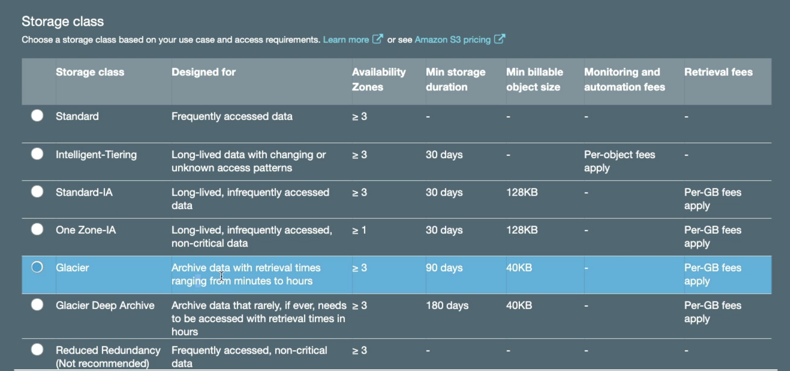
To prevent accidental file deletes, we can setup MFA Delete to use MFA tokens before deleting objects.
Amazon Glacier is for archiving, like writing to tapes.
We can transition objects between storage classes. For infrequently accessed object, move them to STANDARD_IA. For archive objects We don’t need in real-time, GLACIER or DEEP_ARCHIVE. Moving objects can be automated using a lifecycle configuration
At the bucket level, a user can define lifecycle rules for when to transition an object to another storage class.
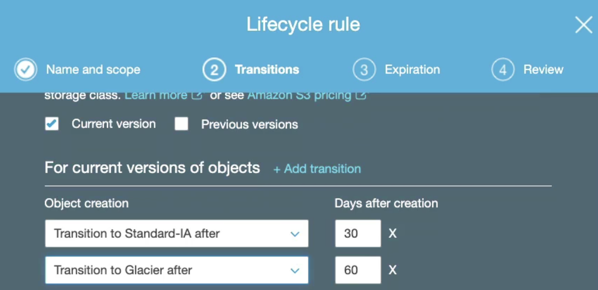
To improve performance, a big file can be split and then uploaded with local connection to the closed edge access and then use AWS private network to copy between buckets in different region.
AWS Athena
AWS Athena runs analytics directly on S3 files, using SQL language to query the files (CSV, JSON, Avro, Parquet...). S3 Access Logs log all the requests made to buckets, and Athena can then be used to run serverless analytics on top of the logs files. Queries are done on high availability capability so will succeed, and scale based on the data size.
No need for complex ETL jobs to prepare your data for analytics.
Integrated with AWS Glue Data Catalog, allowing you to create a unified metadata repository across various services, crawl data sources to discover schemas and populate your Catalog with new and modified table and partition definitions, and maintain schema versioning.
AWS CLI
The cli needs to be configured: aws configure with the credential, key and region to access. Use IAM user to get a new credentials key.
When using CLI in a EC2 instance always use an IAM role to control security credentials. This role can come with a policy authorizing exactly what the EC2 instances should be able to do. Also within a EC2 instance, it is possible to use the URL http://169.254.169.254/latest/meta-data to get information about the EC2. We can retrieve the IAM Role name from that metadata.
CloudFront
CDN service with DDoS protection. It caches data to the edge to improve web browsing and app performance. 216 Edge locations.
The origins of those files are S3 buckets, Custom resource accessible via HTTP. CloudFront keeps cache for the data read. For the edge to access the S3 bucket, it uses an origin access identity (OAI), managed as IAM role.
For EC2 instance, the security group needs to accept traffic from edge location IP addresses.
It is possible to control with geo restriction.
It also supports the concept of signed URL. When you want to distribute content to different user groups over the world: We attach a policy with:
- Includes URL expiration
- Includes IP ranges to access the data from
- Trusted signers (which AWS accounts can create signed URLs)
- How long should the URL be valid for?
- Shared content (movie, music): make it short (a few minutes)
- Private content (private to the user): you can make it last for years
- Signed URL = access to individual files (one signed URL per file)
- Signed Cookies = access to multiple files (one signed cookie for many files)
Storage
Snowball
Move TB of data in and out AWS using physical device to ship data. The edge has 100TB and compute power to do some local processing on data. Snow mobile is a truck with 100 PB capacity. Once on site, it is transferred to S3.
Snowball Edge brings computing capabilities to allow data pre-processing while it's being moved in Snowball, so we save time on the pre-processing side as well.
Hybrid cloud storage
Storage gateway expose an API in front of S3. Three gateway types:
- file: S3 bucket accessible using NFS or SMB protocols. Controlled access via IAM roles. File gateway is installed on-premise and communicate with AWS.
- volume: this is a block storage using iSCSI protocol. On-premise and visible as a local volume backed by S3.
- tape: same approach but with virtual tape library. Can go to S3 and Glacier.
Storage comparison
- S3: Object Storage
- Glacier: Object Archival
- EFS: Network File System for Linux instances, POSIX filesystem
- FSx for Windows: Network File System for Windows servers
- FSx for Lustre: High Performance Computing Linux file system
- EBS volumes: Network storage for one EC2 instance at a time
- Instance Storage: Physical storage for your EC2 instance (high IOPS)
- Storage Gateway: File Gateway, Volume Gateway (cache & stored), Tape Gateway
- Snowball / Snowmobile: to move large amount of data to the cloud, physically
- Database: for specific workloads, usually with indexing and querying
Integration and middleware: SQS, Kinesis Active MQ
SQS: Standard queue
Oldest queueing service on AWS. The default retention is 4 days up to 14 days. low latency < 10ms. Duplicate messages is possible and out of order too. Consumer deletes the message. It is auto scaling.
Specific SDK to integrate to SendMessage...
Consumer receive, process and then delete. Parallel is possible on the different messages. The consumers can be in an auto scaling group so with CloudWatch, it is possible to monitor the queue size / # of instances and on the CloudWatch alarm action, trigger scaling. Max size is 256KB.
Message has metadata out of the box. After a message is polled by a consumer, it becomes invisible to other consumers. By default, the “message visibility timeout” is 30 seconds, which means the message has 30 seconds to be processed (Amazon SQS prevents other consumers from receiving and processing the message.). After the message visibility timeout is over, the message is “visible” in SQS, so it will be processed twice. But a consumer could call the ChangeMessageVisibility API to get more time. When the visibility timeout is high (hours), and the consumer crashes then the re-processing of all the message will take time. If it is set too low (seconds), we may get duplicates
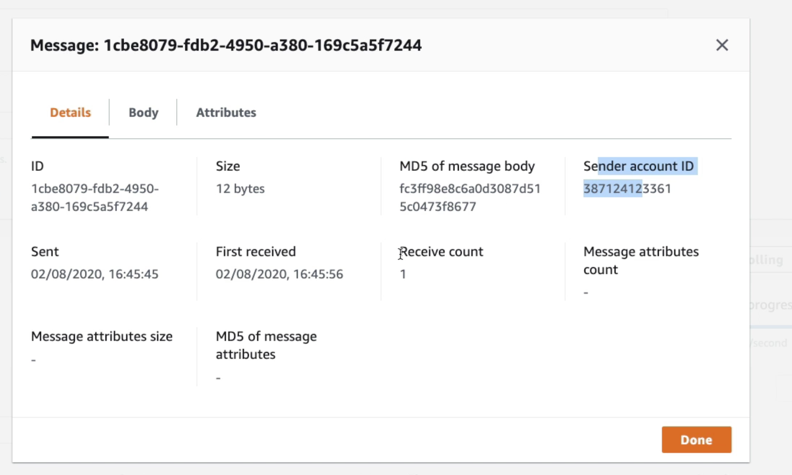
Encryption in fight via HTTPS, at rest encryption with KMS keys. Comes with monitoring.
If a consumer fails to process a message within the Visibility Timeout, the message goes back to the queue. But if we can set a threshold of how many times a message can go back to the queue. After the MaximumReceives threshold is exceeded, the message goes into a dead letter queue (DLQ) (which has a limit of 14 days to process).
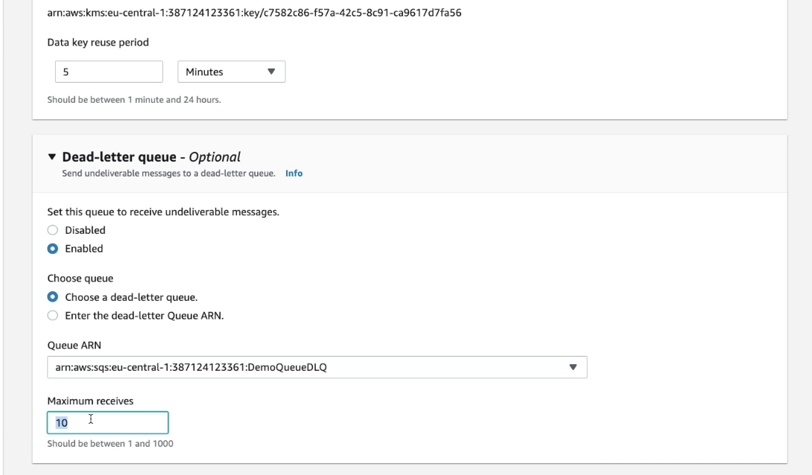
Delay queues let you postpone the delivery of new messages to a queue for a number of seconds. If you create a delay queue, any messages that you send to the queue remain invisible to consumers for the duration of the delay period. The default (minimum) delay for a queue is 0 seconds. The maximum is 15 minutes
Queue can be set as FIFO to guaranty the order: limited to throughput at 300 msg/s without batching or 3000 msg/s with batching. I can also support exactly once. It can be set to remove duplicate by looking at the content.
Simple Notification Service is for topic pub/sub
SNS supports up to 10,000,000 subscriptions per topic, 100,000 topics limit. The subscribers can publish to topic via SDK and can use different protocols like: HTTP / HTTPS (with delivery retries – how many times), SMTP, SMS, ... The subscribers can be a SQS, a Lambda, emails, Emails... Many AWS services can send data directly to SNS for notifications: CloudWatch (for alarms), Auto Scaling Groups notifications, Amazon S3 (on bucket events), CloudFormation.
SNS can be combined with SQS: Producers push once in SNS, receive in all SQS queues that they subscribed to. It is fully decoupled without any data loss. SQS allows for data persistence, delayed processing and retries. SNS cannot send messages to SQS FIFO queues.
Kinesis
It is like a managed alternative to Kafka. It uses the same principle and feature set.
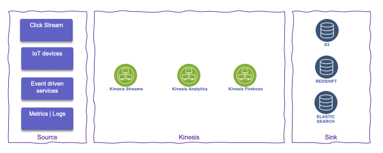
Data can be kept up to 7 days. Ability to replay data, multiple apps consume the same stream. Only one consumer per shard
- Kinesis Streams: low latency streaming ingest at scale. They offer patterns for data stream processing.
- Kinesis Analytics: perform real-time analytics on streams using SQL
- Kinesis Firehose: load streams into S3, Redshift, ElasticSearch. Mo administration, auto scaling, serverless.
One stream is made of many different shards (like Kafka partition). Capacity of 1MB/s or 1000 messages/s at write PER SHARD, and 2MB/s at read PER SHARD. Billing is per shard provisioned, can have as many shards as we want. Batching available or per message calls.
captured Metrics are: # of incoming/outgoing bytes, # incoming/outgoing records, Write / read provisioned throughput exceeded, and iterator age ms.
It offer a CLI to get stream, list streams, list shard...
Serverless
Serveless on AWS is supported by a lot of services:
- AWS Lambda: Limited by time - short executions, runs on-demand, and automated scaling. Pay per call, duration and memory used.
- DynamoDB: no sql db, with HA supported by replication across three AZs. millions req/s, trillions rows, 100s TB storage. low latency on read. Support event driven programming with streams: lambda function can read the stream (24h retention). Table oriented, with dynamic attribute but primary key. 400KB max size for one document. It uses the concept of Read Capacity Unit and Write CU. It supports auto-scaling and on-demand throughput. A burst credit is authorized, when empty we get ProvisionedThroughputException. Finally it use the DynamoDB Accelerator to cache data to authorize micro second latency for cached reads. Supports transactions and bulk tx with up to 10 items.
- AWS Cognito: gives users an identity to interact with the app.
- AWS API Gateway: API versioning, websocket supported, different environment, support authentication and authorization. Handle request throttling. Cache API response. SDK. Support different security approaches:
- IAM:
- Great for users / roles already within your AWS account
- Handle authentication + authorization
- Leverages Sig v4
- Custom Authorizer:
- Great for 3rd party tokens
- Very flexible in terms of what IAM policy is returned
- Handle Authentication + Authorization
- Pay per Lambda invocation
- Cognito User Pool:
- You manage your own user pool (can be backed by Facebook, Google login etc…)
- No need to write any custom code
- Must implement authorization in the backend
- IAM:
- Amazon S3
- AWS SNS & SQS
- AWS Kinesis Data Firehose
- Aurora Serverless
- Step Functions
- Fargate
Lambda@Edge is used to deploy Lambda functions alongside your CloudFront CDN, it is for building more responsive applications. Lambda is deployed globally. Here are some use cases: Website security and privacy, dynamic webapp at the edge, search engine optimization (SEO), intelligent route across origins and data centers, bot mitigation at the edge, real-time image transformation, A/B testing, user authentication and authorization, user prioritization, user tracking and analytics.
Serverless architecture patterns
Few write / Lot of reads app (ToDo)
The mobile application access application via REST HTTPS through API gateway. This use serverless and users should be able to directly interact with s3 buckets. They first get JWT token to authenticate and the API gateway validates such token. The Gateway delegates to a Lambda function which goes to Dynamo DB.
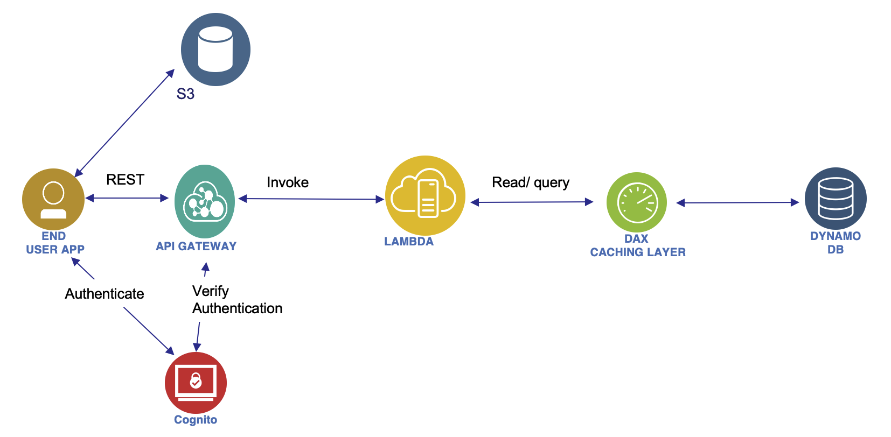
Each of the component supports auto scaling. To improve read throughput cache is used with DAX. Also some of the REST request could be cached in the API gateway. As the application needs to access S3 directly, Cognito generates temporary credentials with STS so the application can authenticate to S3. User's credentials are not saved on the client app. Restricted policy is set to control access to S3 too.
To improve throughput we can add DAX as a caching layer in front of DynamoDB: this will also reduce the sizing for DynamoDB. Some of the response can also be cached at the API gateway level.
Serverless hosted web site (Blog)
The public web site should scale globally, focus to scale on read, pure static files with some write. To secure access to S3 content, we use Origin Access Identity and Bucket policy to authorize read only from OAI.
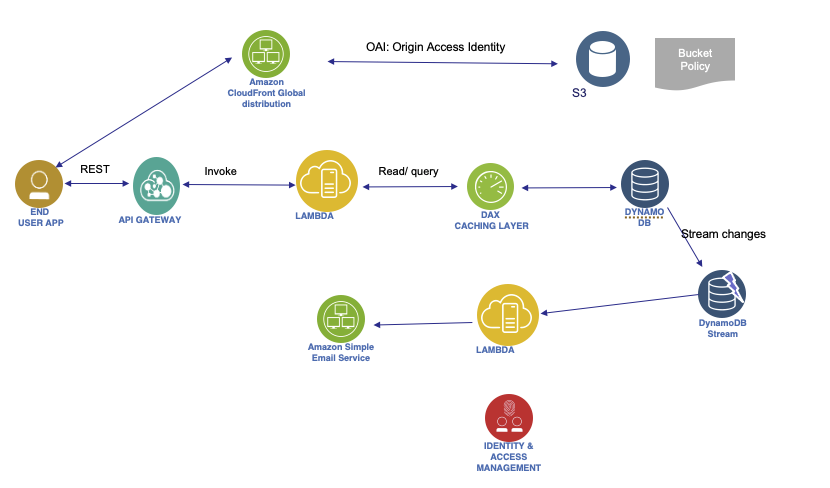
To get a welcome message sent when a user register to the app, we can add dynamoDB streams to get changes to the dynamoDB and then calls a lambda that will send an email with the Simple Email Service.
DynamoDB Global Table can be used to expose data in different regions by using DynamoDB streams.
Microservice
Services use REST api to communicate. The service can be dockerized and run with ECS. Integration via REST is done via API gateway and load balancer.
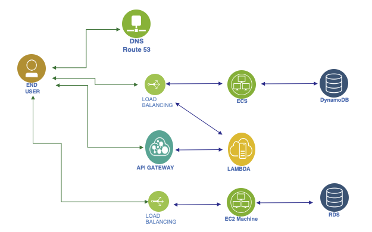
Paid content
User has to pay to get content (video). We have a DB for users. This is a Serverless solution. Videos are saved in S3. To serve the video, we use Signed URL. So a lambda will build those URLs.
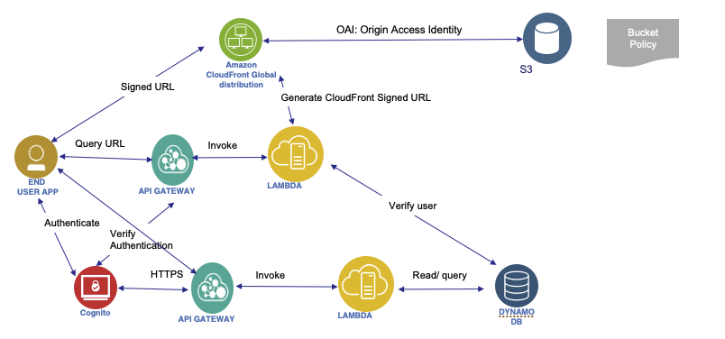
CloudFront is used to access videos globally. OAI for security so users cannot bypass it. We can't use S3 signed URL as they are not efficient for global access.
Software update distribution
The EC2 will be deployed in multi-zones and all is exposed with CloudFront to cache.
Big Data pipeline
The solution applies the traditional collect, inject, transform and query pattern.
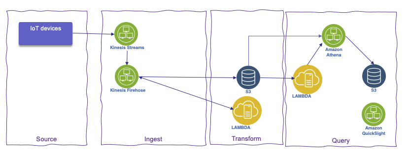
IoT Core allows to collect data from IoT devices. Kinesis is used to get data as streams, and then FireHose upload every minute to S3. A Lambda can already do transformation from FireHose. As new files are added to S3 bucket, it trigger a Lambda to call queries defined in Athena. Athena pull the data and build a report published to another S3 bucket that will be used by QuickSight to visualize the data.
Other Database considerations
Redshift
It is based on Postgresql. but not used for OLTP, it is used for analytical processing and data warehousing, scale to PBs. It is Columnar storage of data. It uses massively parallel query execution.
Data can be loaded from S3, DynamoDB, DMS and other DBs. It can scale from 1 to 128 nodes, and each node has 160GB per node.
The architecture is based on a leader node to support query planning and aggregate results, and compute nodes to perform the queries and send results back.
Redshift spectrum performs queries directly on top of S3.